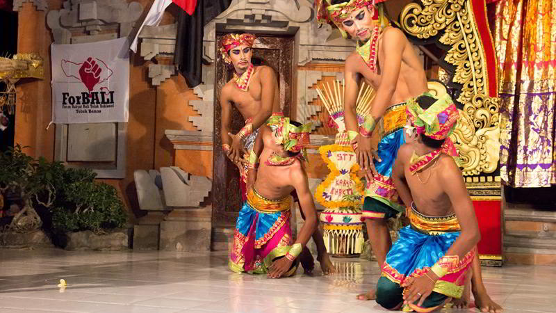

Tari Gopala
Tari Gopala. Seperti halnya Tari Nelayan, Tari Gopala merupakan satu bentuk tari kreasi baru Bali yang bertemakan kerakyatan. Jika Tari Nelayan menggambarkan aktivitas para nelayan dalam menangkap ikan, Tarian Gopala mencoba menggambarkan aktivitas para penggembala di ladang pertanian atau sawah.
Gopala merupakan sebuah istilah dalam bahasa Kawi yang berarti penggembala sapi. Tari yang diciptakan pada tahun 1983 ini diambil dari penggalan cerita fragmentari “STRI ASADHU” karya Ibu Ketut Arini, S.St. Penata tarinya adalah I Nyoman Suarsa dan penata tabuhnya adalah I Ketut Gede Asnawa, MA.
Tari Gopala dibawakan secara berkelompok oleh 4 – 8 orang penari laki-laki. Mereka menari untuk menceritakan aktivitas sekelompok penggembala remaja. Ada gerak binatang sapi, memotong rumput, menghalau burung, membajak sawah, menuai padi dan gerakan-gerakan lain yang berhubungan dengan aktivitas petani.
<< Kembali